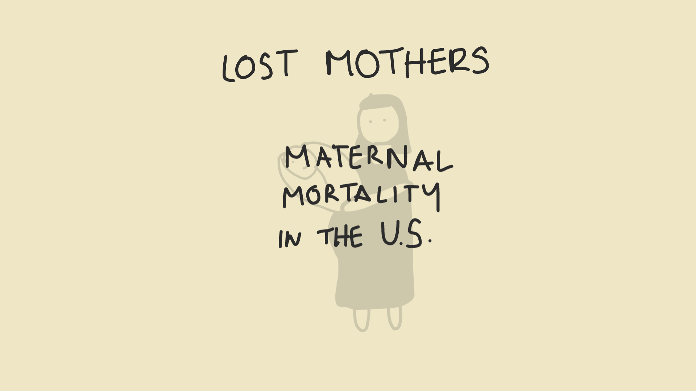

A scrolling story by Claire Filipek
While American newborns are safer than ever...
The women that bring them into the world...
Are in more danger than ever before.
Watch to find out more:
Lost Mothers
from
Claire Filipek
on
Vimeo
.
Source links below
Links
No Country For Pregnant Women | January 10, 2018 Act 2 | Full Frontal on TBS
Maternal mortality is the shame of US health care | November 18, 2017 | CNN
If Americans Love Moms, Why Do We Let Them Die? | JULY 29, 2017 | The New York Times